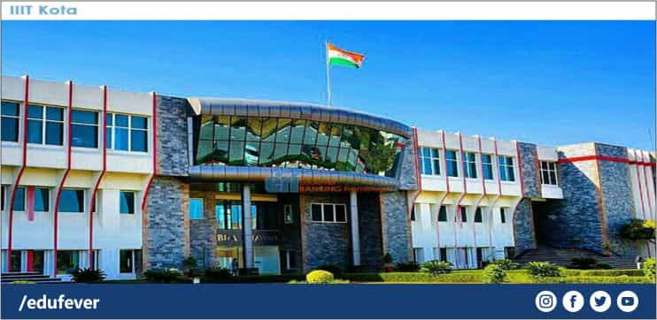
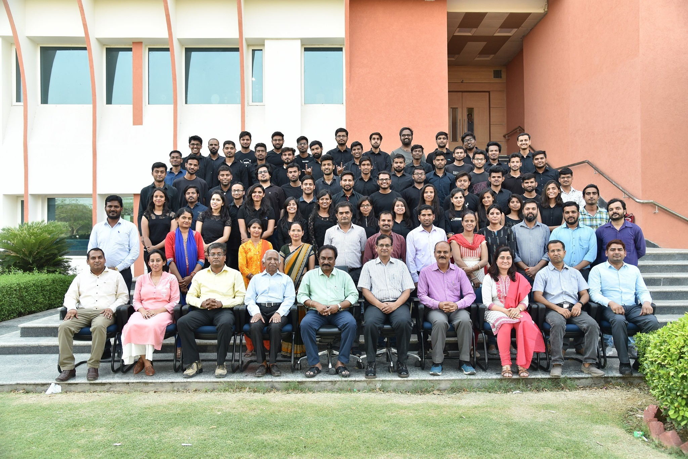

Indian Institute Of Information and Technology, Kota |
|
|
What is IIIT Kota
Indian Institute of Information Technology (IIIT, Kota) was started in 2013. IIIT, Kota is considered as
an
institute of national importance. It is a joint venture of the Ministry of Human Resource Development
(MHRD)
Government of India and the state government (Rajasthan).
The institute runs under the Public-Private-Partnership (PPP) model. IIIT Kota institute is initially
mentored
by Malaviya National Institute of Technology (MNIT Jaipur). The institute offers BTech in the discipline
of
Computer Science & Engineering and Electronics & Communication Engineering only.

Faculty
IIIT Kota focuses on recruiting highly qualified, experienced and competent faculty members who are whole-heartedly devoted to the overall development of students. The institute is proud of having such a faculty team that combines the wisdom of experience with dynamism of freshness. In addition to the core faculty, experts from industry, professionals and eminent personalities recognized for their contributions in research, training and consultancy are also invited to deliver lectures on specialized topics to supplement traditional academic programs. We also send members of the faculty for training in the latest technologies and use of modern media of instructions. The availability of highly qualified, skilled and experienced faculty team and specialized academic staff determine, to a great extent, the excellence of an academic institute. In fact, one may state that backbone of any academic institute is its band of faculty. The institute is proud of its outstanding and dedicated faculty team. The highly qualified faculty members of IIIT, Kota, are its greatest asset that demonstrates impeccable commitment and passion for teaching. Instead of only teaching theories, the faculty brings their experience with them into the classroom. These supportive mentors are not just instructors; they are experienced leaders in their field who put their education in focus for the students while preparing them for a lifetime of thinking, participating and learning.

| FirstName | LastName | Subject |
|---|---|---|
| Vinita | Tiwari | Digital Electronics |
| Parikshit | Singh | Electrical |
| Ruby | Dwiwedi | English |
| Amit | Kumar | Computer Science |
| Basant | Agarwal | Computer Science |
|